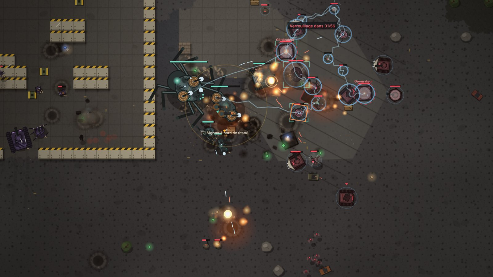

Un raid, trois temps
Fouiller
Caisses, épaves, cristaux, pylônes relais : vos robots ramassent tout ce qui se revend, pendant que l'alerte monte dans la région.
Poser la balise
Son signal attire tout ce qui rôde à des kilomètres. Tenez jusqu'à 100 %, de préférence près d'un pylône relais activé : la balise y charge deux fois et demie plus vite.
S'extraire
Seize secondes pour entrer dans le cercle, où la flotte vous rejoint. Ce qui reste dehors est perdu, robots compris.

Des opérations sur le terrain
Certains contrats placent leur objectif dans le monde, sur la carte et en flèche au bord de l'écran. Ils paient près du double d'une chasse et comptent double pour la réputation de la région.
- ConvoiUn camion blindé n'avance que si vous restez près de lui, et la route est piégée.
- SauvetageRetrouvez un pilote abattu près de son épave, puis ramenez-le vivant jusqu'au lift.
- SabotageTrois générateurs : dès le premier détruit, l'alarme sonne et le compte à rebours commence.
- ForageLancez la foreuse et tenez la position sous les vagues d'assaut jusqu'au minerai.
- TraqueUne cible d'élite nommée, escortée, qui ne reste jamais au même endroit.

De la fourmi à la ville-machine
Neuf rangs de robots, montrés ici à la même échelle. La Fourmi tient dans une case et se remplace pour dix ferrailles ; la Ville-machine couvre un quartier, porte quatorze armes et fabrique ses propres renforts en plein raid.

Une base qui tourne sans vous
Collecteurs, fonderies et centres de données produisent pendant que vous êtes en raid. Chaque extraction fait monter la menace : au-delà de 60 %, des pillards viennent frapper à la porte, et vos tourelles comme vos robots stationnés les reçoivent.
Vingt-neuf bâtiments, à améliorer jusqu'au niveau 10, et un Chantier titanesque pour assembler les géants.

La forge
Choisissez un châssis, cliquez sur un affût de l'aperçu, montez une arme et comparez avant d'assembler. Les affûts principaux portent les plus grosses armes, les autres des armes plus légères. Chaque robot gagne de l'expérience, monte en grade et reçoit des traits ; un cerveau règle son comportement, de l'escorte au récolteur.

Dix langues
Les dix langues les plus parlées au monde, chacune avec son drapeau. On la choisit au premier lancement et on en change à tout moment ; l'arabe se lit de droite à gauche, menus compris.
- Englishanglais
- 中文chinois
- हिन्दीhindi
- Españolespagnol
- العربيةarabe
- Françaisfrançais
- বাংলাbengali
- Portuguêsportugais
- Русскийrusse
- Bahasa Indonesiaindonésien
Et quand la base est solide
Expéditions
Jusqu'à cinq escouades fouillent seules pendant que vous jouez, et même jeu fermé. Vous pouvez les regarder en direct depuis la base.
En ligne
Avec un serveur Colosse : raids à plusieurs en coopération ou en affrontement, classement, et pillage des bases des autres joueurs.
Tutoriel jouable
Une dizaine de minutes dans une partie à part, pour tout apprendre en jouant, du premier tir à la défense de la base.
Télécharger
Changez d'appareil sans perdre votre partie : exportez-la (Réglages → Sauvegarde) puis importez-la sur l'autre, ou créez un compte sur un serveur Colosse.
Navigateur
Sur ordinateur ou téléphone, sans rien installer. Le jeu s'ajoute à l'écran d'accueil et reste jouable hors ligne.
JouerWindows
Version portable, ou installeur avec raccourci.
Fichier .exeAndroid
Android vous demande d'autoriser l'installation depuis votre navigateur : acceptez. À partir de la 2.0.0, les mises à jour s'installent par-dessus la précédente ; depuis une version 1.x, désinstallez d'abord l'ancienne, ce qui efface sa partie (sauf avec un compte sur un serveur Colosse).
Fichier .apkLinux
Un seul fichier à rendre exécutable, puis à lancer.
Fichier .AppImageServeur
Pour jouer en ligne entre amis : Node.js suffit, aucun paquet à installer.
Archive .zip